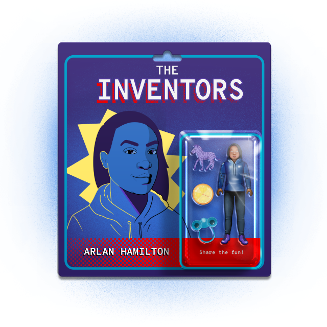

Subscribe to the podcast to receive new episodes as soon as we release them

If you think hard work is enough to guarantee success, you haven’t been listening. All season long, we’ve profiled Black inventors who haven’t quite been given their due. Arlan Hamilton is helping reverse that trend by leveling the playing field—and changing the venture capital game.
Arlan Hamilton’s story mirrors many we’ve covered this season—overcoming adversity to find success. But she’s also helping redefine what success can look like and, in the process, is helping change the broader tech industry. Janice Omadeke lays out how diversifying the VC community in turn leads to greater diversity among founders receiving funding. Ramona Ortega explains how traditional VC priorities often pass over startups that can be successful. And Scott Myers-Lipton discusses inequality in Silicon Valley (and beyond) and how he’s working to bring about lasting change.
00:02 - Arlan Hamilton
Yeah, 2015 was rough. It was the best of times and the worst of times. The first 9, 8, 9 months of it were riddled with housing and food insecurity. I was 34 that year, and I still had that kernel of hope and that little bit of light that was pulling me forward, but it was tough. And then in September of 2015 is when things started to really turn around when I got my first investor. And it gave me that little bit of understanding that yes, I could accomplish what I had set out to do.
00:47 - Saron Yitbarek
That's Arlan Hamilton. She's a hero of mine. Because from that rough moment, years ago, she managed to build a future that didn't just lift herself up—it lifted up so many others. Hamilton's a Black and gay woman who's used to confronting other people's expectations. Plenty of people have underestimated her. And they've all been wrong. That year, her roughest year, was also the moment her dream of building a venture capital firm took shape. A venture capital firm that didn't just support the usual Silicon Valley players, but people like her. She wanted to support women and people of color who had brilliant, innovative ideas—but were facing a lot of locked doors.
01:37 - Saron Yitbarek
This whole season we've been featuring inventors who had to overcome major obstacles while they worked to create a brighter tech future. And you may have noticed that every one of our heroes this season is Black. It's not a coincidence. Access to the levers of power is severely limited for Black people. And that's why this time, for our season finale, we wanted to feature Arlan Hamilton. She's someone who didn't just invent a smart new app or a useful machine—Arlan Hamilton invents opportunity. Through her revolutionary VC firm, Backstage Capital, she's been changing the rules around who gets a seat at the table—and who gets a check. I'm Saron Yitbarek, and this is Command Line Heroes, an original podcast from Red Hat.
02:29 - Saron Yitbarek
Hamilton's VC firm, Backstage Capital, has created opportunities for 130 startups and counting. But I want to begin by understanding what gave her that first opportunity. Who invested in the investor? So, I asked her.
02:46 - Saron Yitbarek
So you mentioned that end of 2015, you had that glimmer of hope you spoke about, and that first investment. Who was that first investor?
02:54 - Arlan Hamilton
My very first investor was a woman named Susan Kimberlin. She is an angel investor in the Bay area who I had met at a 2-week Stanford bootcamp for investors, that I had found my way into. And we just hit it off right away, really got along. I liked her energy; I liked what she stood for. And we spent several weeks and months getting to know each other. And then in September, she became my first investor in Backstage Capital.
03:26 - Saron Yitbarek
Clearly, Susan saw something in you that other investors missed. What do you think she saw? And why did she take a chance?
03:33 - Arlan Hamilton
I think it helped that Susan got to know me. She got to see my consistency over time and hear my thoughts about things, rather than just maybe a deck or a snippet of what I stood for. She was very mission oriented. So that was a few years ago when mission wasn't as much part of the VC vernacular as it is now. For Susan and for other people who came along, who were impact investors first and foremost, they consider their return on investment happening the moment they write the check, as long as it keeps you sustained and lets you go out and see what you can do.
04:16 - Saron Yitbarek
Susan Kimberlin cut Hamilton a $25,000 check. And that turned out to be an investment in investment itself. Because Hamilton had a plan to pay that money forward. She's seen the statistics. Over 90% of venture capital funding was going to companies led by white men. And only 1% goes to startups fronted by people of color. And Hamilton's simple belief was: white men don't have 90% of the good ideas. Innovation from other people was being squashed. She thought to herself...
04:53 - Arlan Hamilton
Well, this is an emergency. We need to “break window for emergency” here. We are running out of time. And so it always felt really right at the precipice for me. And it always felt very much so, like, “If not now, when? If not me, who?”
05:15 - Saron Yitbarek
That break-window moment, the change that Hamilton wanted to bring about, was all about choices. The choices that people with money make when they decide who's worthy, who's a good bet. And we know what kind of people usually get chosen. The Ivy league guy, maybe he's a computer science dropout, definitely white. But who was Hamilton looking to invest it?
05:40 - Arlan Hamilton
I look for someone who reminds me of myself. And sometimes that is a white man across the table, staring at me. But most times it's a person of color, or a woman, or an LGBTQ founder who has made something out of nothing. Who has gone against all odds to get themselves in a position where they're even having the conversation and usually outperforming their peers if they were to be on level playing ground. They are impassioned and they are absolutely going after their dreams and their hopes, but they're not unwieldy in their pursuit. So it doesn’t matter if they've already accomplished a thing or if they just have that glimmer in their eye, so to speak. They may look like there are some rough edges. It doesn’t ping perfect investment on paper, but that's really where you find, it’s between those lines, that you really find the gems.
06:38 - Saron Yitbarek
You've called yourself a triple threat before, because you're Black, you're a woman, and you are gay. Tell me about how navigating Silicon Valley has been as a triple threat.
06:48 - Arlan Hamilton
Yeah. When I said triple threat, I actually was saying it as in, I was threatening to people, not in the Beyoncé way. Navigating it, it's not as lonely as it was before. And it feels more like a community of people who are “other.” And because of my outspokenness, and shaking things up, and not necessarily doing things the way people want me to on multiple fronts—it does still feel like it is a battle. There are these factions that are waiting to see me fail, waiting to see Backstage fail.
07:28 - Saron Yitbarek
So now that you found success, do you feel like being a triple threat or being threatening has actually become a superpower for you?
07:37 - Arlan Hamilton
I've always thought being Black, being gay, and being a woman as a superpower. There's never been a time where I was ashamed of any of that. And I think I wear them as a badge of honor, and I wear them proudly and have for most of my life, even when it wasn't comfortable. And that's where speaking out for people comes in, that's where now Backstage comes in. I think it's all of our superpowers. I'm very excited about it, and I would have it no other way. I would rather live in this body and be who I am and never have another success than to ever change.
08:17 - Saron Yitbarek
The work to expand who gets VC funding isn't just about some kind of prize money; it's not just about a payday for a few lucky inventors. Changing who gets venture capital, means changing what kind of work actually gets made. It sometimes feels like all innovation comes out of Silicon Valley and all of Silicon Valley is funded by VC money. But as our conversation continued, I saw that Hamilton wasn't just trying to shake up who gets funded. She was trying to shake up why people get funded.
08:51 - Arlan Hamilton
There are some companies in our portfolio who will go on and be unicorn companies and go on that route. But I'm just as impressed by, if not more, the sustainable companies that are now called zebra companies where their main goal is to be a sustainable company. To be a company that is revenue positive, that employs a lot of people, that has a good ethics core internally, that is a great place to work, that builds up the economy of their local system, and that serves their customers in the best way possible. And so a lot of those companies are going to only be "hundred-million dollar companies" or only "$10-million companies."
09:39 - Arlan Hamilton
And I am just as excited about those, if not more, than everyone going out for the gusto and going for these billion-dollar-plus companies. Because we've seen very recently, how many of those billion-dollar companies actually have more air in them than substance. And it is not impressive to me that you can raise all kinds of money, but the core inside is rotting.
10:08 - Saron Yitbarek
While other VC firms chase down unicorns, focusing on big paydays, Hamilton is just as likely to cultivate those sustainable zebras she mentioned—startups that also plan to be big, but are optimizing for profitability. Whereas a unicorn dazzles and chases giant investments, hoping to be a billion-dollar company, a zebra is quieter, but promises real, long-term value. It's all a part of her larger focus on inclusive venture capitalism that opens the door for a wider range of companies than traditional VCs usually focus on. Companies started by people like Janice Omadeke.
10:49 - Janice Omadeke
I remember being in a conversation once with a VC and I got asked the question of, “Well, why can't Black and brown professionals just use their network or ask people for help? Why don't they just apply for jobs?” And I was blown away. I was actually very sad.
11:05 - Saron Yitbarek
Janice Omadeke is the CEO and Founder of a startup called The Mentor Method, an enterprise SaaS platform that helps companies retain a diverse workforce.
11:15 - Janice Omadeke
This individual didn't recognize their privilege. They didn't recognize how non-inclusive that question was. I think we mutually broke up with each other at that time, because I don't want somebody on my cap table who doesn't understand the importance and value of having people like me at the table.
11:30 - Saron Yitbarek
Later in 2018, Omadeke was pitching at a South by Southwest pitch competition. Arlan Hamilton was one of the judges. Things went better that time.
11:40 - Janice Omadeke
Arlan was our first venture check. She's able to see that diamond in the rough and be that first check so that you are getting into the rooms that you should've been in long ago. If other VCs did that, we would see an increase in the number of Black-women-led businesses that are receiving venture funding. We would see a larger number of Black-women-led exits. We would see a larger number of Black-women-led IPOs. Because that venture capital is the gateway to broadening your network, being able to build a faster team, improving upon whatever it is you're building. And in our case, it was an enterprise SaaS platform, but for others, it could be CPG (consumer packaged goods) or something else.
12:25 - Saron Yitbarek
Arlan doesn't just see these contributions as a way to support people who look like her. She sees it as an ethical obligation.
12:32 - Arlan Hamilton
We have all of these privileges and we also have an incredible bullhorn and a perch from which to speak, not only through our words, but through how we lead and how we influence our portfolio companies, who in turn are some of the biggest companies in the world. I think that because we benefit so much and other VCs, especially benefit so much from that, it is absolutely part of the crown, if you will, of having that perch. If you're going to wear the crown, you need to serve the kingdom.
13:12 - Saron Yitbarek
If you're going to wear the crown, you need to serve the kingdom. It's not a line you'll hear from many people in the world of venture capital, but what Arlan's work has shown is that serving the kingdom leads to riches that nobody knew were there. I think what's often missed when we talk about diverse investments is the fact that it's not just equitable and fair to invest in people from different backgrounds, it's also wise. Because different people are going to build different technologies. People from different communities are going to see different opportunities.
13:54 - Ramona Ortega
I grew up in a part of the Bay area where I’ve seen a lot of inequality.
13:59 - Saron Yitbarek
Ramona Ortega is the Founder and CEO of My Money My Future.
14:04 - Ramona Ortega
I see my people in my community working really hard and not really reaping the benefits of that hard work. And I was&mdsash;very early on—dedicated, just figuring out how do we really change the wealth gap? How do we get people to be really not just surviving, but thriving?
14:26 - Saron Yitbarek
Ortega saw an opportunity to build something new. And as a Mexican-American woman, she had a better chance of seeing that need than the white male Stanford grad we were talking about earlier. In Ortega's early career, she spent a lot of time trying to affect policies from within the nonprofit world. Then she went into law to better understand the corporate finance side of things. She ended up working on Wall Street as Dodd-Frank was rolling out. She worked on some high profile cases.
14:56 - Ramona Ortega
Madoff and Jon Corzine and MF Global.
15:00 - Saron Yitbarek
And through all that work, Ortega developed a clear picture of how the wealthy of this world build their wealth. How they structure deals and organize their finances. And then she asked herself...
15:13 - Ramona Ortega
What can I do as someone who really deeply cares about closing the racial wealth gap, and who now has this experience in capital markets and in finance? So I understand both of these elements. What can I do to help people actually achieve financial security and build wealth?
15:31 - Saron Yitbarek
When she checked out the world of fintech, Ortega found that apps were being developed for women and millennials. And that was all great. But she also noticed a major missing piece.
15:42 - Ramona Ortega
It didn't necessarily speak to my whole experience, as a third-generation Mexican American and someone who is very close and connected to a lot of immigrant communities and working-class communities. I didn't necessarily feel like the products and the companies that were out there were specifically talking about things that were happening in my community and nuanced financial behaviors and needs. And so then I said it to myself, “If not me, who?”
16:14 - Saron Yitbarek
Does that phrase ring a bell? I was struck to hear the same sentiment from Ramona Ortega that I'd heard from Arlan Hamilton.
16:22 - Arlan Hamilton
If not now, when? If not me, who?
16:27 - Saron Yitbarek
This idea—that you are the hero you've been waiting for—it goes to the heart of what a new culture of venture capital could be. It could be empowering. And not just for a startup founder with a great new idea, but for their users too. When Ortega was able to launch My Money My Future, her users were better able to build financial security. Simple things like guiding a new parent toward life insurance or encouraging someone who just got a promotion to open that 401K.
16:59 - Ramona Ortega
We know for a fact that we have changed people's lives by getting them to take a financial action that's going to result in their long-term wealth building.
17:10 - Saron Yitbarek
Not every VC firm would have seen the value in all this. And that's because they wouldn't have seen the value in Ortega.
17:17 - Ramona Ortega
I think there's an interesting problem with a lot of the early-stage capital. And I'll tell you what I think it is. It's that founders of color, particularly women of color who are receiving, I mean, just pennies on the dollar in terms of startup capital to build their companies, when we go to the seed rounds or the institutional seed rounds, we're often being compared in terms of KPIs. These key performance indicators, like how much have you grown, how many users, what's your scalability, all of that. We're being compared to people who've raised a lot more money upfront. And so when you're looking at, okay, who am I going to invest in? If I'm an investor, I want to invest in a company that looks like they have the most traction.
18:06 - Saron Yitbarek
But who's getting traction? Who's getting that early excitement? It comes back, again, to that foot in the door. Those implicit biases that tell us some people are worth taking a chance on. And others aren't.
18:21 - Ramona Ortega
A lot of times, people of color in tech are meant to feel like they have to have already won to get an investment. Where other folks can be like, “I have an idea. I mean, literally I have just an idea,” and are getting funded or they're super early, don't have a product in market, but people believe in them. What does it take for someone to feel like they believe in someone? And a lot of times that is going to fall into those parameters of like, well, do I trust them? Well, who do you trust? Do you inherently have a bias to trust some people versus others? I mean, there's so much bias built into that relationship. Someone walks in, they recognize you, they see themselves in you. I'm like, “Look, if I'm walking into a room, you've never really seen me. You've never seen me successful.”
19:15 - Saron Yitbarek
If you're the venture capital guy looking to write a check and you can't think of any Latinx people who IPOed last year, that changes who you can imagine being a success.
19:26 - Ramona Ortega
And so when they see someone that looks like a Mark Zuckerberg, of course, there's a reference point for that success. And when you look around, I think that's part of that inherent bias is that you just don't know if you're going to be successful. So I've never seen a person that looks like you be successful in this space.
19:47 - Saron Yitbarek
What Ortega's describing has created serious roadblocks as people of color seek out traditional VC capital. And that's why it matters so much when a person like Arlan is at that table. Arlan looks at a person like Ortega, and it's easy for her to imagine a success. My Money My Future was, in fact, one of the first 100 companies in Arlan's portfolio. Whereas talking about the racial wealth gap had alienated other investors, it drew Arlan in. And you know, Ortega's startup is just one example. I can't help wondering what our larger tech landscape would look like if there were a whole army of Backstage Capitals. If VC firms could all see the promise in each person who walks through their door.
20:42 - Saron Yitbarek
A couple episodes back, when we explored the life of Roy Clay, we heard him suggest that the arrival of venture capital was the real beginning of Silicon Valley. That injection of cash decades ago allowed tech pioneers to strike out on their own. But, by the same logic, we can ask whether the arrival of Black venture capital has created a more diverse Silicon Valley. Yes, you get support for startups like Ramona Ortega's. But what's the bigger picture? Is real, systemic change taking place?
21:17 - Saron Yitbarek
Back in 2014, tech giants like Apple, Google, and Facebook started producing diversity reports that showed a huge lack of representation of Black and Latinx people—especially in management. Very few companies have solved this problem. This industry has a long way to go—and that includes the company that makes this podcast, Red Hat. In fact, when San Jose State University's Human Rights Initiative released its first Silicon Valley Pain Index this year, it showed that tech giants have made little progress in recent years. They found that only 1% of venture capital money was going to Black-led startups. Meanwhile, the percentage of Black employees at the largest tech companies? Just 3%. And many of those don't include a single Black woman.
22:12 - Scott Myers-Lipton
African Americans are almost 15% of the population in the United States. Why is there not 15% folks of color in those spaces and places?
22:21 - Saron Yitbarek
That's Scott Myers-Lipton, a professor at SJSU (San Jose State University) and the creator of the Silicon Valley Pain Index.
22:28 - Scott Myers-Lipton
I'm a person that believes in the language and the philosophy and the thinking of Dr. Martin Luther King Jr. He said, "For Blacks, if they have half the good things in life and two times the bad things in life, that's a racist system." And that's what we had in King's time, in the 50s and 60s, and sadly, today, that's what we have in Silicon Valley. You have for white folks, $82,800 on average per capita income. For Blacks, it's $40,800. So there it is, two times the number. Half the good for African Americans.
23:08 - Saron Yitbarek
It probably doesn't help that proactive moves to rectify diversity issues often get called out for being so-called “reverse racism.” Systemic change gets pushed back. When Microsoft announced they were trying to increase Black hiring, for example, the current U.S. Labor Department began investigating them, charging that Microsoft might be guilty of reverse racism. It's easy to feel discouraged, but Myers-Lipton puts into perspective just how much is at stake.
23:39 - Scott Myers-Lipton
Jacques Cousteau, he was an early environmentalist, was on television, like on PBS, back in 1970. And he was asked, "Are you hopeful about the planet and the survival of humans?" And he said, "Absolutely not. Not hopeful at all, but we have to try." We've had a 250-year history of enslavement, another 100-year history of Jim Crow's segregation. And we've had 50-, 60-plus years, we are by practice, still segregated. Our schools are more segregated today than they were in 1954 before Brown vs. Board of Education.
24:19 - Scott Myers-Lipton
We have less African Americans owning homes than they did in the turn of the 20th century. We're not going forward. So am I going to stop trying? Never, but it's going to take an incredible amount of folks that are listening, that hear this, and realize that we have to do more. And my hope is that they really hear this, and decide to make, and to actually institutionalize it, and tie their job performance to it. And make that capital available to African Americans and other folks of color and to develop pipelines. Because our future of our nation, and ultimately our world, depends on us figuring this out, because there'll be continual social unrest unless we figure it out.
25:10 - Saron Yitbarek
Another thing Martin Luther King Jr. said was that, "The arc of the moral universe is long, but it bends towards justice." Despite setbacks and delays, change is always possible. I wanted to ask Arlan about the movement she's seen. Here's a bit more of our conversation.
25:28 - Saron Yitbarek
And so, what I want to know is do you think the start of a venture capital firm founded by a Black woman, like yourself, is a sign that more doors are opening for Black inventors in Silicon Valley in recent times?
25:41 - Arlan Hamilton
Oh, I absolutely do. I still think there are just a handful of Black women owned and started and founded funds—that's rarefied air, unfortunately, still. Just look at what we do when we have it. Look at what we do with that. Everyone I'm thinking of, including myself, we don't sit back and just say, "Okay, well, how do I make the most money? How do I get the best carry deal for myself? How do I do the bare minimum to get the most output?" It's usually this ripple effect of impact and catalyzation. And you're seeing that now with Black women, Latinx women, Indigenous women starting their own. And yes, they start out, we start out with much less capital and resources than we deserve, but we have to start somewhere. And I do think that there's a willpower that we have that is unheard of and unmatched. The better we do, the more good we put out there to the world.
26:47 - Saron Yitbarek
The arrival of new, diverse VC firms does have the power to change the tech landscape. Zebras might get some love, and not just unicorns. Founder-friendly venture capital might prioritize sustainability, and diverse investment can lead to diverse leadership. But I want to close by reminding you that no VC at all is also an option. There are successful companies like MailChimp that are completely bootstrapped and privately owned—they never felt the need to raise a zillion dollars in funding. Some people get off the ground with just their savings or a loan from a bank. Others build their companies without outside capital, by only relying on the revenue they generate.
27:31 - Saron Yitbarek
Me, for example? I just launched an audio course startup called Disco. And it's a media tech company, so I need to hire producers, I need to build content. All that means I might need some investment, but I'm still figuring it out. How much equity am I willing to give? Maybe the trick is remembering that your creation has value, even before someone else buys in. And then you decide who gets to invest. This whole season, we've tracked inventors who changed the tech landscape, despite enormous roadblocks. Some of the heroes we featured saw their opportunities narrowed by segregation. Others were denied jobs because of the color of their skin. In tech, we often talk about a meritocracy, but we know that as long as there is systemic racism, such a system cannot exist.
28:27 - Saron Yitbarek
We have to actively uplift the people who are historically held back, give them a chance to do well, and shine the light on them when they do. Ending with Arlan Hamilton's story, I hope we've shown that opportunities in tech aren't actually something that just get handed out in a neutral way. Opportunities are things that people invent. And that means who gets an opportunity, and what gets a chance to be invented, can change. We can change it. After all: if not us, who?
29:03 - Saron Yitbarek
That's it for season 6. For more information on Arlan, or any of the 8 heroes we featured this season, head over to redhat.com/commandlineheroes. We've collected a ton of extra information and resources for you. In the meantime: keep on coding. I'm Saron Yitbarek, and this is Command Line Heroes.